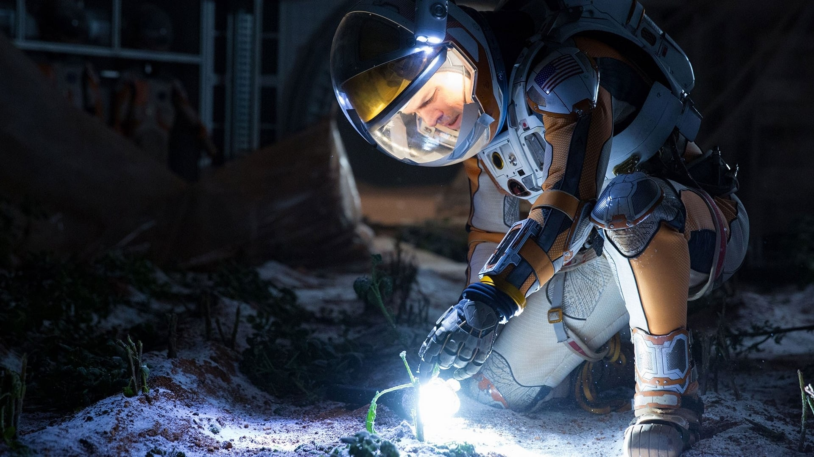

Perdido em Marte
O astronauta Mark Watney é enviado a uma missão em Marte. Após uma severa tempestade ele é dado como morto, abandonado pelos colegas e acorda sozinho no misterioso planeta com escassos suprimentos, sem saber como reencontrar os companheiros ou retornar à Terra.